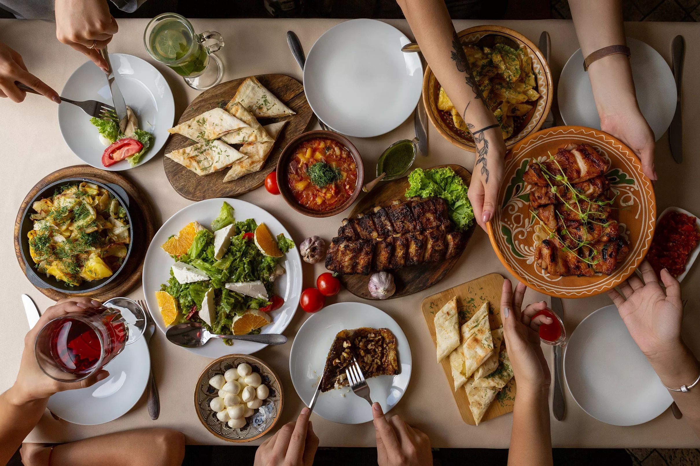

Har bir beka mehmon kutishni va biror bir bayramda dasturxon bezatishni juda yaxshi ko’radi. Ular bu ishni juda qunt va mahorat bilan bajaradi. Hammaga o’z pazandaligini ko’rsatib qo’yishni istaydi. Agar mahoratingizni va bilimingizni yana ham oshirmoqchi bo’lsangiz, quyidagi oshxona sirlariga e’tibor bering:
Agarda salat mehmonlarga og’irlik qilmasin desangiz, unga bodring yoki nordon olma qo’shib yuboring. Shunda salat tezroq hazm bo’ladi. Ko’katlaringiz endigina uzilgan ta’mli bo’lishni istasangiz, iste’mol qilishdan avval sovuq suvda emas, iliq suvda chaying. Kartoshga qaynaganda, po’sti yorilib ketishini istamasangiz, kartoshkali suv qaynashidan oldin suvga oz miqdorda sirka qo’shib yuboring. Bodring qo’shilgan salatlarni uzoq vaqt saqlanishini istasangiz, tuzlangan bodring o’rniga marinadlanganidan soling. Salatlar uchun ishlatiladigan tuxumni baland olovda 10 daqiqadan kam pishirmang. Keyin esa po’chog’ini artishga shoshmasdan bir necha daqiqa sovuq suvda qoldiring. Baliq tozalash oson ish emas, shuning uchum tozalash paytida qiynalmay desangiz, baliqni tozalashdan oldin 30 soniya qaynagan suvga solib oling. Shunda baliq osongina tozalanadi. Gaz pechida pishadigan go’shtning sersuv bo’lishini istasangiz, har 10-15 daqiqada o’zidan chiqqan sharbatini ustiga quyib turing. Agar sharbati kam bo’lsa, ozroq sho’rva yoki suv qo’shishingiz mumkin. Mehmonlaringiz va o’z salomatligingiz haqida o’ylasangiz, yeguliklar bilan birga ko’proq ko’katlar va salat barglarini qo’ying. Ko’katlar bilan bezatilgan taomingiz ham chiroyli ko’rinadi, ham foydali bo’ladi.
Dasturxonga taomlar bilan birga gazli suv qo’ymang. Chunki gazli suv taomlar bilan birikmaydi. Yaxshisi, gazlanmagan yoki qaynagan suv qo’ying. Ko’k choy ham taomlar hazmini yaxshilaydi. Tayyorlagan salatingiz tezroq hazm bo’lishini istasangiz, mayonezni smetana bilan 1:1 nisbatta alaralashtiring. Ko’p miqdordagi tuxum esa salatni yanada to’yimli qilishi mumkin. Shuning uchun salatga kamroq tuxum qo’shing. Albatt, mehmonlarni shirinliksiz kutmaydi. Agar shirinlik yoki tort tayyorlashda yong’oqdan foydalanmoqchi bo’lsangiz, uni avval gaz pechida biroz qizdirib oling. Shunda yong’oq xushbo’y bo’ladi. Shirinlik xamiriga vanilin solishdan avval uni suvga aralashtirib oling. Bu vanilinning xamirga teng miqdorda aralashishiga yordam beradi.